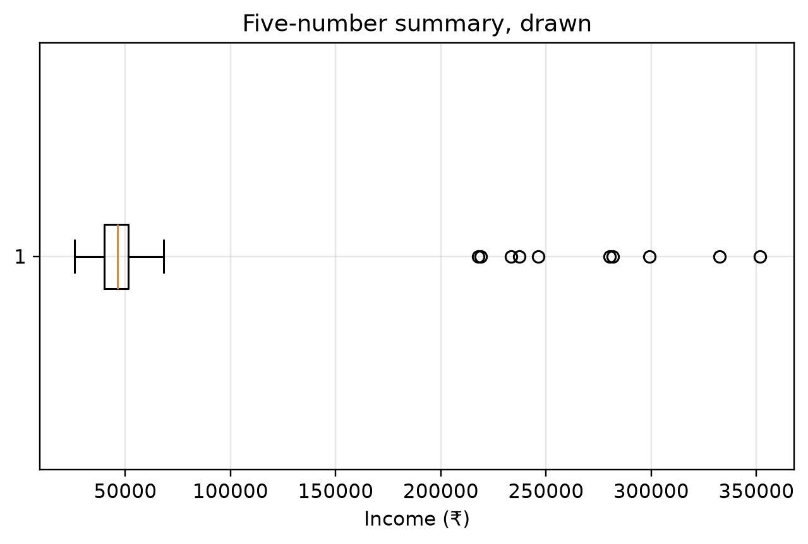
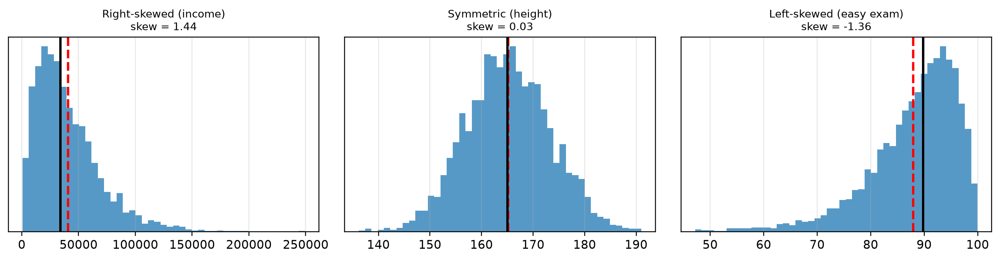
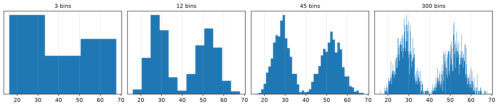

This chapter is about summarising a column of numbers into a few honest numbers.
Assumed knowledge: Sessions 2–3 — DataFrames, and the IQR idea borrowed in Session 3 for outlier detection. This chapter is where that idea is done properly.
The one idea to take away:one number is never enough. A centre without a spread, or a spread without a shape, will mislead you — and this chapter shows exactly how.
9.1 🎯 Learning outcomes
By the end of this chapter you can:
Compute mean, median and mode, and choose between them with a reason.
Measure spread with range, variance, standard deviation and IQR.
Read a five-number summary and the box plot that draws it.
Convert a value to a z-score and say what it means.
Describe a distribution’s shape using skewness and kurtosis.
Build a frequency distribution and choose a sensible bin width.
Explain what the normal distribution assumes and check whether your data fits it.
Each part exists because the previous one is not enough on its own.
10 Part A — Where is the centre
10.1 1. Mean, median and mode
A measure of central tendency is a single number standing in for a whole column. There are three, and they answer slightly different questions.
Measure
What it is
Answers
Mean
add everything, divide by the count
“if it were shared equally, how much each?”
Median
sort, take the middle value
“what does the person in the middle have?”
Mode
the most frequently occurring value
“what is most common?”
10.1.1 Demo 1 — computed by hand, then by pandas
import pandas as pdmarks = pd.read_csv("datasets/class_marks.csv")["mark"]values =sorted(marks)print("Sorted marks:", values)# By handtotal =sum(values)print(f"\nMEAN = {total} ÷ {len(values)} = {total/len(values):.2f}")middle = (values[3] + values[4]) /2# 8 values, so average the two middle onesprint(f"MEDIAN = middle of {values[3]} and {values[4]} = {middle}")print(f"MODE = 61, which appears {values.count(61)} times")# By pandas — the same answersprint(f"\npandas: mean {marks.mean():.2f} median {marks.median()} mode {marks.mode()[0]}")
Sorted marks: [39, 48, 52, 55, 61, 61, 61, 70]
MEAN = 447 ÷ 8 = 55.88
MEDIAN = middle of 55 and 61 = 58.0
MODE = 61, which appears 3 times
pandas: mean 55.88 median 58.0 mode 61
10.2 2. Why the choice matters
The mean is pulled towards extreme values. The median is not. With symmetric data they agree and the choice is irrelevant. With skewed data they can tell opposite stories.
Tip🧠 Analogy — the pub and the billionaire
Ten people are in a pub. Their average wealth is ₹5 lakh.
A billionaire walks in. The average wealth in the pub is now over ₹90 crore. The median wealth has barely changed.
Which number describes “how rich are the people in this pub”? The median. The mean is not wrong — it is answering “if everyone shared equally”, which is not the question anyone asked.
10.2.1 Demo 2 — the same data, two honest-looking answers
import pandas as pdsalaries = pd.read_csv("datasets/team_salaries.csv")["salary"]print(f"Nine ordinary salaries and one founder:\n{salaries.tolist()}\n")print(f"Mean salary : ₹{salaries.mean():>10,.0f}")print(f"Median salary : ₹{salaries.median():>10,.0f}")print(f"\nPeople earning above the mean: {(salaries > salaries.mean()).sum()} out of {len(salaries)}")print("A company could truthfully advertise the mean — and 9 of 10 staff earn less.")
Nine ordinary salaries and one founder:
[28000, 31000, 33000, 35000, 36000, 38000, 40000, 42000, 45000, 950000]
Mean salary : ₹ 127,800
Median salary : ₹ 37,000
People earning above the mean: 1 out of 10
A company could truthfully advertise the mean — and 9 of 10 staff earn less.
10.2.2 Demo 3 — how much one value can move each measure
import pandas as pdbase = pd.read_csv("datasets/team_salaries.csv")["salary"].head(9) # drop the founderprint(f"{'top earner':>12} | {'mean':>10} | {'median':>8}")print("-"*36)for top in [46_000, 100_000, 500_000, 5_000_000]: s = pd.concat([base, pd.Series([top])])print(f"{top:>12,} | {s.mean():>10,.0f} | {s.median():>8,.0f}")
top earner | mean | median
------------------------------------
46,000 | 37,400 | 37,000
100,000 | 42,800 | 37,000
500,000 | 82,800 | 37,000
5,000,000 | 532,800 | 37,000
The mean moved by nearly ₹5 lakh. The median moved by ₹1,000. This is the whole argument for the median, and it is why Session 3 imputes skewed columns with it.
10.2.3 Which to use
Situation
Use
Because
roughly symmetric data — heights, exam marks
mean
it uses every value
skewed data — income, house prices, waiting times
median
extremes cannot drag it
text or categories — most popular product
mode
the others do not apply
you are about to impute a skewed column
median
Session 3, Demo 4
11 Part B — How spread out
11.1 3. Why a centre alone is useless
Two datasets can have identical means and be nothing alike.
11.1.1 Demo 4 — same mean, different worlds
import pandas as pddeliveries = pd.read_csv("datasets/supplier_deliveries.csv")steady, erratic = deliveries["steady"], deliveries["erratic"]for name, s in [("Steady supplier", steady), ("Erratic supplier", erratic)]:print(f"{name:<18} mean {s.mean():.1f} min {s.min():>3} max {s.max():>3}")print("\nIdentical averages. You would not choose between them on the average.")
Steady supplier mean 50.0 min 48 max 52
Erratic supplier mean 50.0 min 10 max 85
Identical averages. You would not choose between them on the average.
Tip🧠 Analogy — two archers
Both archers average dead centre. One puts every arrow within a coin’s width of the bullseye. The other lands half in the top-left corner and half in the bottom-right.
Their averages are identical. Only one of them can hit a target. Spread is the measure that tells them apart.
11.2 4. The four measures of spread
Measure
How it is computed
Sensitive to outliers?
Range
max − min
extremely — it is the two extremes
Variance
average of the squared distances from the mean
yes
Standard deviation
the square root of the variance
yes
IQR
Q3 − Q1, the range of the middle half
no
Standard deviation is the one you will report, because it is in the same units as the data. Variance is in squared units — “squared rupees” means nothing to anybody — but it is what the maths works with internally.
11.2.1 Demo 5 — standard deviation computed step by step
import pandas as pd, numpy as nps = pd.read_csv("datasets/supplier_deliveries.csv")["steady"]mean = s.mean()steps = pd.DataFrame({"value": s})steps["distance from mean"] = steps["value"] - meansteps["squared"] = steps["distance from mean"] **2print(steps.to_string(index=False))variance = steps["squared"].sum() / (len(s) -1) # divide by n-1 for a sampleprint(f"\nvariance = {steps['squared'].sum():.2f} ÷ {len(s)-1} = {variance:.3f}")print(f"standard deviation = √{variance:.3f} = {np.sqrt(variance):.3f}")print(f"pandas agrees : {s.std():.3f}")
value distance from mean squared
48 -2.0 4.0
49 -1.0 1.0
50 0.0 0.0
50 0.0 0.0
51 1.0 1.0
52 2.0 4.0
variance = 10.00 ÷ 5 = 2.000
standard deviation = √2.000 = 1.414
pandas agrees : 1.414
Why squared? Because plain distances from the mean always sum to zero — the positives cancel the negatives. Squaring makes everything positive; the square root at the end puts the answer back into the original units.
print(f"Sum of raw distances from the mean: {(s - s.mean()).sum():.10f} ← always zero")
Sum of raw distances from the mean: 0.0000000000 ← always zero
11.2.2 Demo 6 — all four measures, and which one the outlier fools
import pandas as pdclean = pd.read_csv("datasets/supplier_deliveries.csv")["steady"]with_out = pd.concat([clean, pd.Series([300])], ignore_index=True)for name, d in [("without outlier", clean), ("with outlier", with_out)]: q1, q3 = d.quantile(0.25), d.quantile(0.75)print(f"{name:<16} range {d.max()-d.min():>5.0f} "f"std {d.std():>6.1f} IQR {q3-q1:>5.1f}")print("\nRange and standard deviation exploded. The IQR barely moved —")print("which is why Session 3 uses the IQR to find outliers, not the standard deviation.")
without outlier range 4 std 1.4 IQR 1.5
with outlier range 252 std 94.5 IQR 2.0
Range and standard deviation exploded. The IQR barely moved —
which is why Session 3 uses the IQR to find outliers, not the standard deviation.
11.3 5. Quartiles and the five-number summary
Sort the data and cut it into four equal parts. The three cut points are the quartiles.
Meaning
Q1 (25th percentile)
a quarter of values are below this
Q2 (50th percentile)
the median — half below
Q3 (75th percentile)
three quarters below
IQR
Q3 − Q1: the range the middle half occupies
The five-number summary is minimum, Q1, median, Q3, maximum. It describes a distribution more honestly than a mean and a standard deviation, and it is exactly what a box plot draws.
11.3.1 Demo 7 — the five-number summary, and the box plot that is a picture of it
import pandas as pd, numpy as np, matplotlib.pyplot as pltincome = pd.read_csv("datasets/incomes_200.csv")["income"]q1, med, q3 = income.quantile([0.25, 0.5, 0.75])print(f"minimum : ₹{income.min():>10,.0f}")print(f"Q1 : ₹{q1:>10,.0f}")print(f"median : ₹{med:>10,.0f}")print(f"Q3 : ₹{q3:>10,.0f}")print(f"maximum : ₹{income.max():>10,.0f}")print(f"\nIQR = {q3:,.0f} - {q1:,.0f} = ₹{q3-q1:,.0f}")print(f"The middle 50% of people earn between ₹{q1:,.0f} and ₹{q3:,.0f}")plt.boxplot(income, orientation="horizontal")plt.xlabel("Income (₹)"); plt.title("Five-number summary, drawn")plt.show()print(f"\n.describe() gives the whole summary at once:")print(income.describe().round(0))
minimum : ₹ 25,756
Q1 : ₹ 40,037
median : ₹ 46,136
Q3 : ₹ 51,363
maximum : ₹ 351,583
IQR = 51,363 - 40,037 = ₹11,326
The middle 50% of people earn between ₹40,037 and ₹51,363

Figure 11.1: A box plot is a drawn five-number summary. The box is the middle half; the dots are IQR-rule outliers.
.describe() gives the whole summary at once:
count 200.0
mean 56505.0
std 50720.0
min 25756.0
25% 40037.0
50% 46136.0
75% 51363.0
max 351583.0
Name: income, dtype: float64
11.4 6. Z-scores: comparing across different units
A z-score says how many standard deviations a value sits from the mean. It lets you compare things measured on completely different scales.
import pandas as pd# A student scored 78 in maths and 65 in physics. Which was the better performance?subjects = pd.read_csv("datasets/subject_marks.csv")maths, physics = subjects["maths"], subjects["physics"]for subject, marks, mine in [("Maths", maths, 78), ("Physics", physics, 65)]: z = (mine - marks.mean()) / marks.std()print(f"{subject:<8} scored {mine} class mean {marks.mean():5.1f} "f"std {marks.std():5.2f} z = {z:+.2f}")print("\nThe higher raw mark was maths. The better performance was physics:")print("65 in physics is further above its class than 78 is above its class.")
Maths scored 78 class mean 62.6 std 9.98 z = +1.54
Physics scored 65 class mean 44.3 std 7.72 z = +2.68
The higher raw mark was maths. The better performance was physics:
65 in physics is further above its class than 78 is above its class.
This is the same arithmetic as StandardScaler in Session 5. Standardizing a column is just converting every value to its z-score.
12 Part C — What shape
12.1 7. Skewness
Skewness measures which way a distribution leans.
Skewness
Shape
Mean vs median
Examples
≈ 0
symmetric
equal
heights, measurement errors
positive (right-skewed)
a long tail to the right
mean > median
income, house prices, waiting times
negative (left-skewed)
a long tail to the left
mean < median
exam marks on an easy test, age at death
A quick check needing no calculation: compare the mean and the median. If the mean is noticeably higher, the data is right-skewed.
12.1.1 Demo 9 — three shapes, and the mean–median gap in each
import numpy as np, pandas as pd, matplotlib.pyplot as pltthree = pd.read_csv("datasets/three_shapes.csv")shapes = {"Right-skewed (income)": three["income_right_skewed"],"Symmetric (height)": three["height_symmetric"],"Left-skewed (easy exam)": three["easy_exam_left_skewed"],}fig, axes = plt.subplots(1, 3, figsize=(12, 3.2))for ax, (name, data) inzip(axes, shapes.items()): s = pd.Series(data) ax.hist(s, bins=45, alpha=.75) ax.axvline(s.mean(), color="red", ls="--", lw=2) ax.axvline(s.median(), color="black", lw=2) ax.set_title(f"{name}\nskew = {s.skew():.2f}", fontsize=9) ax.set_yticks([])plt.tight_layout(); plt.show()for name, data in shapes.items(): s = pd.Series(data) gap = s.mean() - s.median()print(f"{name:<24} skew {s.skew():+6.2f} mean − median = {gap:+10.1f}")

Figure 12.1: Right-skewed, symmetric and left-skewed. The dashed line is the mean, the solid line the median.
Right-skewed (income) skew +1.44 mean − median = +6725.2
Symmetric (height) skew +0.03 mean − median = +0.1
Left-skewed (easy exam) skew -1.36 mean − median = -1.8
Read the signs together: positive skew and a positive mean−median gap always travel together. Either one tells you the same thing.
12.2 8. Kurtosis
Kurtosis measures how often extreme values occur — how heavy the tails are.
Pandas reports excess kurtosis, measured against the normal distribution:
Excess kurtosis
Means
Consequence
≈ 0
tails like a normal distribution
the usual rules apply
> 0 (heavy-tailed)
extremes more common than normal
outliers are routine; expect shocks
< 0 (light-tailed)
extremes less common
values cluster; few surprises
12.2.1 Demo 10 — same mean, same standard deviation, very different risk
import numpy as np, pandas as pdreturns = pd.read_csv("datasets/daily_returns.csv")normal_returns = returns["normal_tails"]heavy_returns = returns["heavy_tails"] # same spread, much heavier tailsfor name, r in [("Normal tails", normal_returns), ("Heavy tails", heavy_returns)]: s = pd.Series(r) beyond3 = (s.abs() >3).mean()print(f"{name:<14} mean {s.mean():+.3f} std {s.std():.3f} "f"kurtosis {s.kurtosis():6.2f} | days beyond 3 std: {beyond3:.2%}")print("\nSame mean, same standard deviation. The heavy-tailed one has several times")print("more extreme days — and a risk model assuming normal tails would miss them.")
Normal tails mean +0.002 std 1.005 kurtosis -0.02 | days beyond 3 std: 0.28%
Heavy tails mean +0.006 std 1.000 kurtosis 20.10 | days beyond 3 std: 1.57%
Same mean, same standard deviation. The heavy-tailed one has several times
more extreme days — and a risk model assuming normal tails would miss them.
Warning⚠️ Most real data is not normally distributed
The bell curve is the default assumption in a great deal of statistics, and financial, biological and web-traffic data routinely break it — usually by being right-skewed and heavy-tailed.
Check before you assume. Plot a histogram. Compare the mean and the median. Look at the kurtosis. Session 5’s log transform is the usual repair for skew.
13 Part D — Frequency distributions
13.1 9. Counting values into bins
A frequency distribution counts how many values fall into each bin. A histogram is its picture. It is the fastest way to see everything at once — centre, spread, shape, gaps and outliers, in one glance.
13.1.1 Demo 11 — building a frequency table by hand
The cumulative column answers “what share are under 45?” without any further work.
13.1.2 Demo 12 — bin width changes the story
import numpy as np, matplotlib.pyplot as plt# This file is genuinely two groups: a younger cohort and an older one.data = pd.read_csv("datasets/two_cohorts.csv")["age"].valuesfig, axes = plt.subplots(1, 4, figsize=(13, 2.9))for ax, b inzip(axes, [3, 12, 45, 300]): ax.hist(data, bins=b) ax.set_title(f"{b} bins", fontsize=10); ax.set_yticks([])plt.tight_layout(); plt.show()print("3 bins : one lump — the two groups are invisible")print("12 bins : two peaks appear — this is the real structure")print("45 bins : still two peaks, a little rougher")print("300 bins : noise; every bin holds a handful of values")

Figure 13.1: The same 2,000 values at four bin widths. Too few bins hides the two groups; too many shows only noise.
3 bins : one lump — the two groups are invisible
12 bins : two peaks appear — this is the real structure
45 bins : still two peaks, a little rougher
300 bins : noise; every bin holds a handful of values
Warning⚠️ Bin width is a choice you are making about the reader
Three bins hid the fact that this is two different populations. Anyone shown that first histogram would report a single average age of 40 — a value almost nobody in the data is anywhere near.
Always look at more than one bin width before believing a histogram.
13.1.3 Demo 13 — the full description, in one function
import pandas as pd, numpy as npdef describe_column(s, name="column"):"""Everything this chapter covers, for one numeric column.""" q1, q3 = s.quantile([0.25, 0.75])print(f"── {name} ── ({len(s):,} values)") repeats = s.value_counts().iloc[0] >1 mode_txt =f"mode {s.mode().iloc[0]:>10,.1f}"if repeats else"mode (no value repeats)"print(f" centre : mean {s.mean():>12,.1f} median {s.median():>12,.1f}{mode_txt}")print(f" spread : std {s.std():>12,.1f} IQR {q3-q1:>12,.1f} "f"range {s.max()-s.min():>9,.1f}")print(f" shape : skew {s.skew():>12.2f} kurtosis {s.kurtosis():>10.2f}") lean ="right"if s.skew() >0.5else"left"if s.skew() <-0.5else"roughly symmetric" tails ="heavy"if s.kurtosis() >1else"light"if s.kurtosis() <-1else"normal-ish"print(f" verdict : leans {lean}; tails are {tails}")print(f" report the {'median'ifabs(s.skew()) >0.5else'mean'}\n")three = pd.read_csv("datasets/three_shapes.csv")describe_column(three["income_right_skewed"], "Income")describe_column(three["height_symmetric"], "Height (cm)")describe_column(pd.read_csv("datasets/incomes_200.csv")["income"], "Incomes (200 people)")
── Income ── (3,000 values)
centre : mean 40,597.2 median 33,871.9 mode 3,197.1
spread : std 28,885.4 IQR 35,248.5 range 248,577.6
shape : skew 1.44 kurtosis 3.14
verdict : leans right; tails are heavy
report the median
── Height (cm) ── (3,000 values)
centre : mean 165.2 median 165.0 mode 161.6
spread : std 8.2 IQR 11.0 range 54.8
shape : skew 0.03 kurtosis -0.06
verdict : leans roughly symmetric; tails are normal-ish
report the mean
── Incomes (200 people) ── (200 values)
centre : mean 56,505.1 median 46,136.5 mode 40,792.0
spread : std 50,719.9 IQR 11,325.5 range 325,827.0
shape : skew 4.27 kurtosis 17.82
verdict : leans right; tails are heavy
report the median
13.1.4 ❓ Check yourself
Q1. In a neighbourhood, 99 houses cost ₹1 crore and one costs ₹500 crore. Which figure best describes a typical house?
The mean.
The median.
The range.
Q2. Two factories both average 50 defects per week. Factory A’s standard deviation is 2; Factory B’s is 30. What does that tell you?
Factory B produces more.
Factory B is far less predictable — some weeks will be very bad.
Nothing; the averages are the same.
Q3. A column has mean 82,000 and median 47,000. What shape is it?
Symmetric.
Right-skewed — a tail of large values pulling the mean up.
Left-skewed.
Q4. Why does Session 3 use the IQR rather than the standard deviation to find outliers?
The IQR is easier to compute.
Outliers inflate the standard deviation, so they hide themselves. They cannot move the quartiles.
The IQR works on text columns too.
Q5. Excess kurtosis of +5 means:
The data leans right.
Extreme values happen much more often than a normal distribution predicts.
The mean is unreliable.
NoteAnswers
A1 — (b). The mean would be about ₹6 crore — a price no house in the area has.
A2 — (b). Same centre, very different spread. Demo 4’s two archers.
A3 — (b). Mean above median means a right tail. Demo 9 showed the sign always matching.
A4 — (b). Demo 6 measured this: adding one outlier barely moved the IQR and changed the standard deviation completely.
A5 — (b). Demo 10 — the heavy-tailed series had several times as many extreme days at identical mean and standard deviation.
14 🎯 Tasks
Note✏️ Practise
Task 1 — Predict the gap. For each, say whether the mean will be above, below or equal to the median: house prices in a city; heights of adult women; number of days patients stay in hospital; marks on a test where most students scored above 90.
Task 2 — Compare fairly. A runner finishes a 5 km race in 22 minutes (field mean 25, std 4) and a 10 km race in 50 minutes (field mean 55, std 8). Which was the better run?
Task 3 — Choose the bin width. Run Demo 12 with 6, 20 and 100 bins on data made of three groups instead of two. Report the smallest number of bins at which all three groups are visible.
Task 4 — Describe a column. Use describe_column from Demo 13 on the income series from Demo 7. Report which measure of centre you would publish and why.
NoteSolutions
import pandas as pd, numpy as np# Task 1print("Task 1")print(" house prices → mean ABOVE median (right-skewed)")print(" heights of adult women → mean EQUAL to median (symmetric)")print(" hospital stay length → mean ABOVE median (a few very long stays)")print(" marks on an easy test → mean BELOW median (left-skewed)")# Task 2 — compare with z-scores. Lower time is better, so a NEGATIVE z is good.print("\nTask 2 (a faster time is better, so the more negative z wins)")for race, time, mean, std in [("5 km", 22, 25, 4), ("10 km", 50, 55, 8)]:print(f" {race:<6} z = ({time} - {mean}) / {std} = {(time-mean)/std:+.2f}")print(" The 5 km run wins: -0.75 is further below its field average than -0.62.")print(" In raw minutes the 10 km looks like the bigger gap (5 minutes vs 3), but")print(" that field is more spread out, so 5 minutes buys less there.")
Task 1
house prices → mean ABOVE median (right-skewed)
heights of adult women → mean EQUAL to median (symmetric)
hospital stay length → mean ABOVE median (a few very long stays)
marks on an easy test → mean BELOW median (left-skewed)
Task 2 (a faster time is better, so the more negative z wins)
5 km z = (22 - 25) / 4 = -0.75
10 km z = (50 - 55) / 8 = -0.62
The 5 km run wins: -0.75 is further below its field average than -0.62.
In raw minutes the 10 km looks like the bigger gap (5 minutes vs 3), but
that field is more spread out, so 5 minutes buys less there.